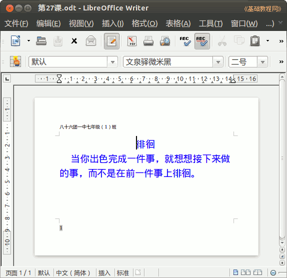

2014-2015 第一学期七年级文字处理和网页教学设计
作者：TeliuTe 来源：基础教程网
二十七、学会页眉，页脚，页码 返回目录 下一课
（一）教学设计
1、学习目标：学会Ubuntu基本操作，校园网操作，中英文指法
2、注意事项：绕过弯来，既不要跳也不要落，一楼过了二楼
3、教学过程：
1）教师准备学案和板书；
2）学生整队进入，开机抄黑板上笔记；
3）教师讲解板书演示操作；
4）学生打指法、日志、完成操作；
5）教师打勾记录学生指法成绩，检查日志和操作；
注：学生抄完笔记就开始打指法、日志，老师讲完后再继续完成；
（二）板书设计(学生笔记)
第27课 学会页眉，页脚，页码
2014-12-25 18:35
1. 页眉，页脚在上下边，空白里
2. 点“插入，页眉，默认” 输入班级
3. 点插入，页脚，光标到下边
4. 点插入，字段，页码
--
徘徊
当你出色完成一件事，就想想接下来做的事，而不是在前一件事上徘徊。
--
操作图示：

（三）课后记
课后反思落了两课了，心里烦心事顾不了这么多都
先讲一下分界线和四个小方块跟小三角对上
--
页眉输入自己的学校班级，按照上次普法教育填写的完整地址
后面的课直接输入7-1就行了，复习的时候简单些可以
--
页脚说明是插入的，总共三次插入，页眉一次，页脚两次
后面学的多了，复习的时候看一下笔记本上的前面的内容
--
页脚有个自动的虚框，自己输入的是白的假的
打一些回车，到第二页看一下自动的和白的区别，指明老师检查的时候要看虚框
--
把前面的复习一下，然后再学习新的内容
笔记严格要求一下，没抄的同学慢慢惯毛病出来也是
返回目录 下一课
本教程由86团学校TeliuTe制作|著作权所有
基础教程网：http://teliute.org/
美丽的校园……
转载和引用本站内容，请保留作者和本站链接。